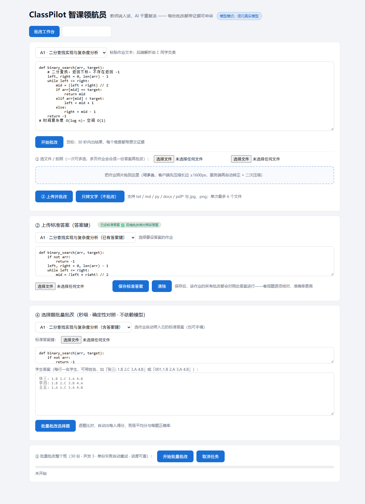

面向高校教师的对话式教学管理智能体 —— 教师说人话，AI 干重复活。覆盖「批改 → 分析 → 管理动作」完整闭环，每份批改都带原文证据、可复核可申诉。
八大能力全部真实落地，REAL 模式实测（非 Mock）。
每个给分/扣分点必须引用学生原文（≤60字），评分可追溯、可申诉，解决"AI 批改黑盒"信任问题。
只给一个标准答案，也能识别"学生用了不同但正确的方法"——如用归纳法而非倒序相加法证明，判 equivalent 给满分。
教师上传标准答案后，客观题逐项核对、主观题按参考解比对，准确率显著高于纯 rubric 打分。
逐题确定性比对，零模型依赖，一个班 30 人秒级出分，附班级平均分、及格率与每题正确率。
手机拍作业 → 混元多模态忠实转录（认不清标 [?]，严禁脑补）→ 直接批改，还原真实课堂场景。
成绩分布/维度热力图/趋势、TF-IDF 查重、班级周报、个性化练习一键生成，形成"评价→诊断→干预"闭环。
一句话"批改第二次作业""谁连续两次没交"，Agent 自动识别意图并调用工具，教师无需学界面。
低置信度标记"建议复核"，教师改分写回并记录修正规律，AI 初审 + 教师复核双保险。
所有数字来自真实模型调用与真实测试集，未做任何美化。
评测说明：10 份含人工评分的真实样本（代码/数学/选择），REAL 模式逐份批改。误差均值 9.3 分为当前真实水平，我们如实公开并在迭代优化——不用 Mock 数据冒充效果。
以下为本地服务真实运行截图（REAL 模式 · 混元真实模型角标可见），非设计稿。

批改工作台：代码作业粘贴/文件上传、上传标准答案（答案键）、选择题批量批改、全班批量批改，一屏完成。
3 分钟完整功能演示（团队制作中，将随正式提交一并发布）。
视频占位 —— 正式提交时替换为完整演示视频
Vue3 前端 + Node 零依赖后端 + SQLite 单文件库，一套服务搞定演示与部署。
跨专业三人小组，以接口契约为边界协作。
Vue3 教师端五个页面、访谈、演示视频与路演材料。
批改内核：证据链评分、答案键感知、多方法等价判定、多模态转录、Prompt 工程与真实评测。
数据库/API/文件解析/查重引擎/学情聚合/部署/说明文档。